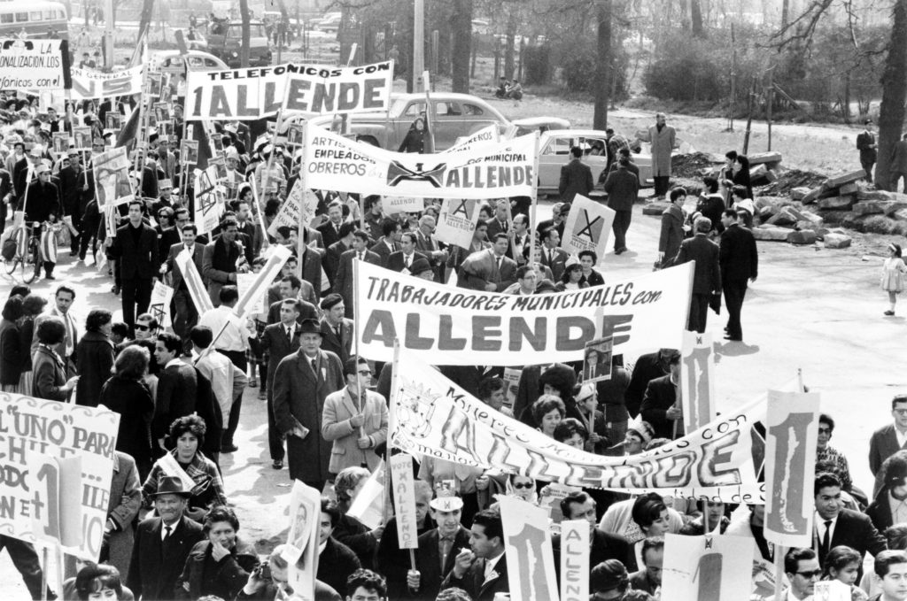

Período Colonial (1541-1810)
El período colonial en Chile comenzó con la llegada de Pedro de Valdivia, quien fundó Santiago en 1541. Durante esta etapa, los españoles establecieron un sistema de encomiendas y enfrentaron la resistencia de los pueblos indígenas, como los mapuches.
Independencia de Chile (1810-1818)
La lucha por la independencia comenzó con la Primera Junta de Gobierno en 1810. Figuras como Bernardo O'Higgins y José de San Martín fueron clave en la emancipación, culminando con la proclamación de la independencia en 1818.

Chile en el Siglo XX
El siglo XX estuvo marcado por cambios políticos y sociales, incluyendo la presidencia de Salvador Allende, el golpe militar de 1973 y la dictadura de Augusto Pinochet. La transición a la democracia en 1990 marcó un nuevo capítulo en la historia chilena.
